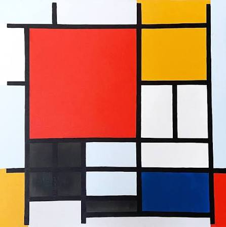

He started his career painting traditional, naturalistic landscapes. Over time, his style evolved through Impressionism and Cubism until he stripped art down to its most basic elements
He believed that reducing art to pure geometric forms expressed a universal, spiritual order behind life
